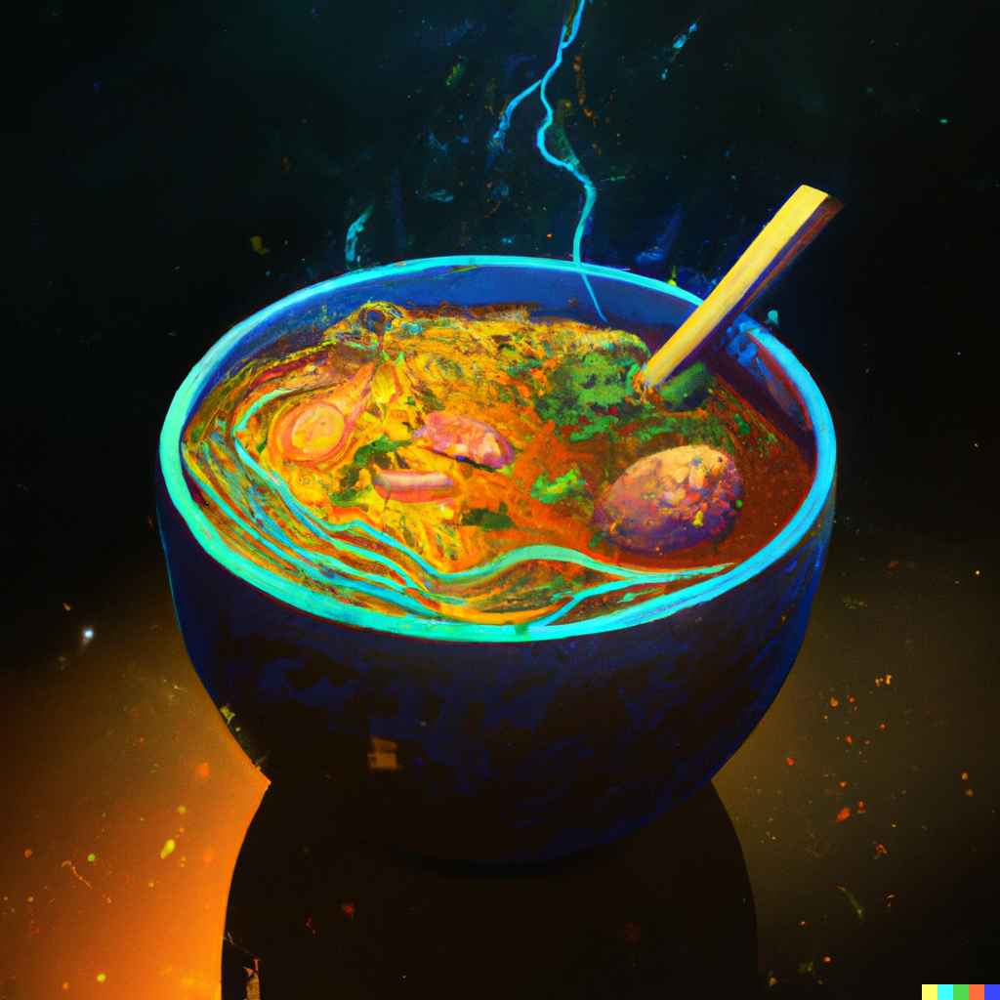

A cyberpunk-inspired ramen dish with a futuristic twist
This ramen incorporates future food tech like algae-based broth, lab-grown protein, and a nano-tech garnish.
Ingredients
- 2 packs of ramen noodles
- 4 cups of algae-based broth
- 2 tablespoons synthetic umami flavor enhancer
- 1 cup of canned corn
- 1 cup of canned spinach
- 2 servings of lab-grown protein (chicken, beef, or pork)
- 4 green onions, chopped
- Nano-tech garnish that changes color or releases different flavors
Recipe Instructions
- In a large pot, bring the algae-based broth to a boil. Add the synthetic umami flavor enhancer, stirring until it dissolves.
- Add the ramen noodles and cook according to the package instructions.
- Once the noodles are cooked, divide them into two bowls.
- Top each bowl with the canned corn, spinach, lab-grown protein, and green onions.
- Sprinkle with the nano-tech garnish that changes color or releases different flavors as you eat. Serve hot.
Return to top
Return to main page